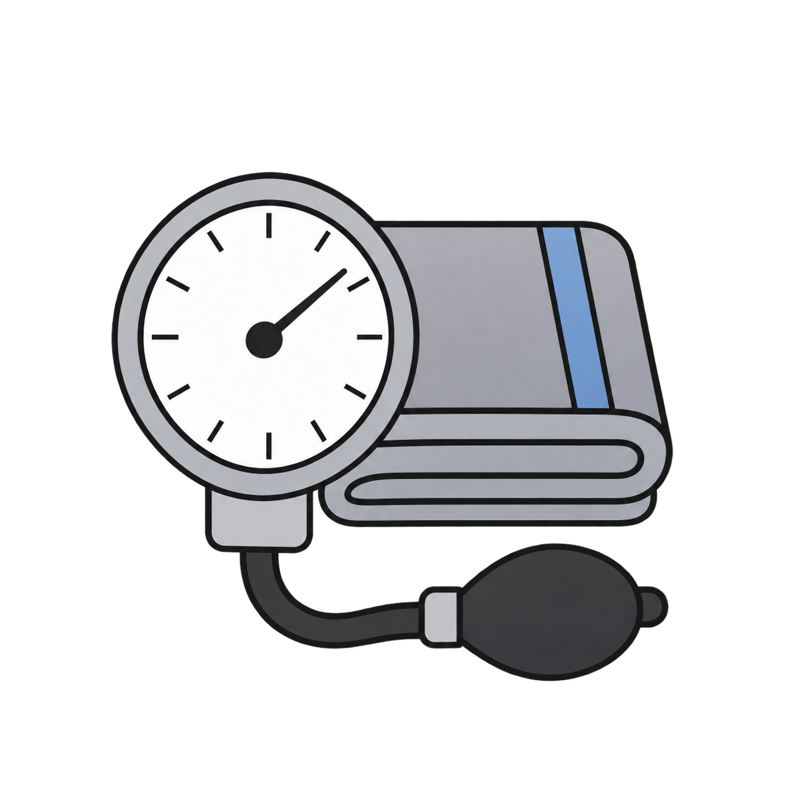

You are signed in with account:
Display name:

Enter at least one name. All other fields are optional.
Enter the parts you know. A day requires a month; month or year alone is enough.
JPEG, PNG, WebP, or GIF, up to 10 MB. Uploaded directly to Drive when you save.
Saved automatically in this resident’s folder inside Infirmary-BHR. The folder is created when needed.
This is shared with the team.
Name and logo are saved privately in this BHR Drive directory and used in the menu bar and printed headers. PNG with transparency is recommended; JPEG, WebP and GIF up to 10 MB are also accepted.
Off is not recommended: directory edits may stay on this device until manual or final logout sync. Uploads and medication/refill saves still go directly to Drive/Sheets.
Shared clinic settings. Applies to active medications for living people. Estimates use pharmacy days supply, including PRN medicines.
Google Drive connection and directory sync are required to open the workspace.
BHR files are kept together inside Infirmary-BHR in Google Drive. Sign in with your own Google account, then open the existing Infirmary-BHR folder shared by your administrator. Do not sign in as the central Drive account.
For the workspace owner only. Staff should open the shared folder above.
No directory folder selected
Used for new entries. Your Google account determines note ownership.
Periodic checks use the frequency in Preferences while connected and this app is visible. Folder attachments are links; attaching a folder does not upload records or change sharing permissions.
Detaching this folder can break this chart’s links to files or its upload destination. Are you sure you want to detach it?
The folder and its files will remain in Google Drive.
Choose a folder in Google Drive or paste its link. The link will be saved on this person's record.
Any file type. The file goes directly to Google Drive, never to GitHub. Uploading a file with an existing name creates another file; it does not replace it.
Only the original author's connected Google account can edit this note.
ARE YOU SURE YOU WANT TO DELETE THESE ENTRIES?
Sticky notes are permanently deleted. Files go to Google Drive Trash. Only empty folders and clinical notes you created can be deleted.
ARE YOU SURE YOU WANT TO PERMANENTLY DELETE THIS ENTRY?
This removes the entry from this directory and propagates on sync. There is no undo. Deleting a person also removes their notes. Attached Drive files and folders are not deleted. Existing backups and Drive version history are unaffected.
Draw with a mouse, finger or stylus when the pencil is selected.
Shared through the directory in Google Drive. Avoid sensitive details unless appropriate for everyone using this workspace.
Read-only · Newest first · App changes since logging was introduced. Text copy: BHR_event_log.txt in the directory's Drive folder.
These drafts are held in this browser session. Open one and Save note to store it in Drive. Logging out clears unsaved drafts.
Enter only the measurements taken. RA means room air. For height, enter total inches or centimeters.
Select one response in each column. Leave GCS blank if a response cannot be assessed.
This removes this observation from the spreadsheet. The patient and other observations remain unchanged. There is no in-app undo.
Estimates use pharmacy-dispensed days supply, including PRN medicines. Actual stock may differ. Refill information is excluded from medication printouts.
Leave unknown values blank. Zero refills means none remain. Rx numbers retain leading zeros. Estimates assume supply starts on the dispensing date; early-refill carryover is not added automatically.
Add or subtract days from this fill’s estimate without changing its original days supply.
This removes only this refill record. The medication and other refill records remain unchanged. There is no in-app undo.
Medication name is required. Other details are optional.
This discards the unsaved note from this session.
This removes the entry from the medical history spreadsheet. Delete errors or duplicates only after reviewing the entry.
The desktop texture stays the same. This color is remembered on this device.
Create a weekly calendar or open a past one.
Public copies contain names, leaving/returning times and area only. Printing saves the current calendar first. Calendars are fitted to one Letter page.
Save your calendar changes before continuing?
Version 0.31.1
© Mepkin Abbey 2026
Create a rundown or open a saved one. Select a saved rundown before using Start from previous.
Save this draft before switching documents?